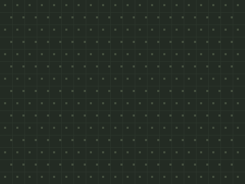

坦克大战
五次课做出一个双人对战游戏——先玩成品 → 拆解 → 自己试 → 卡住才看参考做法。上课请用 放映版；本页是全文与进度。
一、开课之前
先玩 1 分钟
👨👩👦 一起 · 先玩 1 分钟
先把成品玩一遍——你接下来五次课，就是要亲手做出它。这门课要两个人：孩子和家长各开一辆坦克。
游戏解剖图
👨👩👦 一起 · 游戏解剖图（自上而下）
整个游戏 = 五大模块，五次课各做一块：
第 1 课
第 2 课
第 3 课
第 4 课
第 5 课
素材清单
👨👩👦 一起 · 素材
六个角色加一块背景：坦克-绿、坦克-蓝（各带上/右/下/左四个造型）、子弹、土墙、钢墙、爆炸（两帧造型）——素材包全有。
 子弹上传两次：子弹-绿/子弹-蓝
子弹上传两次：子弹-绿/子弹-蓝
背景素材包自带课程进度表
👨👩👦 一起 · 课程进度表
二、五次课
第 1 课 · 两辆坦克
👨👩👦 一起 · 本章目标
👨👩👦 一起 · 效果与拆解
- 已有按键检测— 射击课开飞船同款
- 新学一套键盘分两半— 字母键 vs 方向键互不打架
- 新学造型即朝向— 换上/右/下/左四个造型
- 新学场地边界— 坐标夹住不许出界
👦 孩子自己 · 自己试试（先别翻答案）
先自己试 10 分钟：两辆坦克导入、各就各位；先让绿坦克动起来，再想蓝坦克怎么办；卡住超过 5 分钟，再看参考做法。
👨👩👦 一起 · 概念 · 双人 = 两段一样的脚本
复制、改名、换按键
- 绿用字母键、蓝用方向键——键盘左右两半，互不打架
- 朝向用造型换，不用旋转：像素坦克看得清清楚楚
- 边界判定四条"如果"，把 x、y 夹在场地里
W A S D
← ↑ ↓ →
👨👩👦 一起 · 参考做法（卡住才看）
- 绿坦克：先会上下
当绿旗被点击 移到 x: (-180) y: (-120) 重复执行 如果 <按下 [w] 键?> 那么 换成 [上] 造型 将y坐标增加 (3) 如果 <按下 [s] 键?> 那么 换成 [下] 造型 将y坐标增加 (-3)🧰 积木在：侦测外观运动——两件事一起做：换朝向造型 + 动坐标✅ W 向上 S 向下，车头跟着转向 - 再加左右，凑齐四方
如果 <按下 [a] 键?> 那么 换成 [左] 造型 将x坐标增加 (-3) 如果 <按下 [d] 键?> 那么 换成 [右] 造型 将x坐标增加 (3)接在刚才那个循环里——四个"如果"平级排，谁按谁动✅ W A S D 四个方向全通，车头永远朝前进方向 - 别开出场地
如果 <(x 坐标) > (215)> 那么 将x坐标设为 (215) 如果 <(x 坐标) < (-215)> 那么 将x坐标设为 (-215) 如果 <(y 坐标) > (155)> 那么 将y坐标设为 (155) 如果 <(y 坐标) < (-155)> 那么 将y坐标设为 (-155)接在移动积木后面同一个循环里——四堵看不见的墙✅ 撞到场地边就停，不会消失在屏幕外 - 蓝坦克：复制粘贴改按键
右键绿坦克脚本区 → 复制到 坦克-蓝：移到 x:(180) y:(120)；把 W/S/A/D 全换成 ↑/↓/←/→——其他一个字都不用改✅ 两人同时开，互不干扰——双人对战的地基打好了
👨👩👦 一起 · 验收
- 🎮 两人同时开车互不卡顿
- 🧭 车头朝向永远和移动方向一致
- 🚧 谁都开不出场地
- ↩️ 绿旗双方回出生点
车会动了——但还不会打架。下一课装炮。
👨👩👦 一起 · 试一试
驾驶手感
🧑 家长先看 · 常见错误
双开两病
👦 孩子自己 · 进阶挑战 · 三选一
画笔扩展
声音
运动
👦 孩子自己 · 课后回顾
第 2 课 · 开炮！
👨👩👦 一起 · 本章目标
👨👩👦 一起 · 效果与拆解
- 已有克隆— 老朋友了
- 新学读别人的坐标— ([坦克-绿] 的 x 坐标)
- 新学面向变量— 坦克把朝向存进变量
- 新学发射冷却— 计时器管住机关枪
👦 孩子自己 · 自己试试（先别翻答案）
先自己试 10 分钟：给坦克加上"方向变量"，再让子弹从炮口飞出去；卡住超过 5 分钟，再看参考做法。
👨👩👦 一起 · 参考做法（卡住才看）
- 坦克：换造型时记下方向
如果 <按下 [w] 键?> 那么 换成 [上] 造型 将 [绿方向] 设为 (0) 将y坐标增加 (3)四个方向都加一行：上=0、右=90、下=180、左=−90（和 Scratch 方向盘一样）。蓝坦克用 蓝方向 变量✅ 绿方向/蓝方向 始终等于车头朝向 - 子弹-绿：站上炮口，朝向发射
当按下 [空格] 键 如果 <(计时器) > (0.4)> 那么 计时器归零 移到 x: ([坦克-绿] 的 [x 坐标]) y: ([坦克-绿] 的 [y 坐标]) 面向 (绿方向) 度 克隆 [自己]🧰 积木在：事件侦测——「…的 x 坐标」在侦测抽屉，下拉选 坦克-绿✅ 空格一按，子弹从炮口冒头 - 分身：一路直飞，出界删除
当作为克隆体启动时 显示 重复执行直到 <碰到 [边缘]?> 移动 (12) 步 删除此克隆体「碰到边缘?」在侦测抽屉，下拉里选 边缘——撞墙的判定第 3 课再细化✅ 炮弹笔直飞出屏幕自动消失 - 子弹-蓝：同款改三个字
复制 子弹-绿 → 改名 子弹-蓝：触发键换 回车、坐标读 坦克-蓝、面向 蓝方向✅ 回车也能开炮——对轰开始
👨👩👦 一起 · 验收
- 💥 子弹永远从炮口、朝车头方向飞
- 🔫 连按不会变成机关枪（0.4 秒冷却）
- ♻️ 子弹出界即删不堆积
- ↩️ 绿旗一切复原
能开炮了，但战场上没有掩体——下一课砌墙。
👨👩👦 一起 · 试一试
弹道手感
🧑 家长先看 · 常见错误
开炮两怪
👦 孩子自己 · 进阶挑战 · 三选一
控制
声音
运算
👦 孩子自己 · 课后回顾
第 3 课 · 土墙与钢墙
👨👩👦 一起 · 本章目标
👨👩👦 一起 · 效果与拆解
- 新学撞墙回退— 先记旧位置，碰墙就弹回
- 新学只删被打中的那块— 广播后每块墙自查
- 已有碰到角色— 判定主力
- 已有克隆体删除— 子弹消亡同款
👦 孩子自己 · 自己试试（先别翻答案）
先自己试 10 分钟：土墙、钢墙复制几块摆到场地中间（对齐格线），先试试车撞上去会发生什么；卡住超过 5 分钟，再看参考做法。
👨👩👦 一起 · 参考做法（卡住才看）
- 摆阵地
土墙右键「复制」× 8、钢墙 × 4：对齐背景格线摆——中央留条走廊，两边各留个掩体角。摆完先开一局看看顺不顺手✅ 场地像模像样：有掩体、有通道
- 坦克：撞墙回退
将 [旧x] 设为 (x 坐标) 将 [旧y] 设为 (y 坐标) …四个方向的"如果 按下…移动"照旧… 如果 <<碰到 [土墙]?> 或 <碰到 [钢墙]?>> 那么 移到 x: (旧x) y: (旧y)🧰 积木在：旧x/旧y 设在移动前，回退判定在移动后——两辆坦克都要加✅ 车撞墙即停，不再穿墙 - 子弹：土墙碎、钢墙硬
如果 <碰到 [土墙]?> 那么 广播 [土墙被打] 删除此克隆体 如果 <碰到 [钢墙]?> 那么 删除此克隆体接在子弹分身的"移动"循环里——钢墙连广播都不用发：它压根不会坏✅ 炮弹打土墙炸开口，打钢墙只留个火花 - 土墙：收到广播先自查
当绿旗被点击 显示 当接收到 [土墙被打] 如果 <<碰到 [子弹-绿]?> 或 <碰到 [子弹-蓝]?>> 那么 播放声音 [explosion] 隐藏 停止 [这个脚本]🧰 积木在：广播是"大喇叭"，自查是"点名"——两步合起来才会只碎一块✅ 只有真正挨炮的那块墙消失，别处安然无恙
👨👩👦 一起 · 验收
- 🚗 车撞墙回退，不穿墙
- 🧱 土墙挨一炮碎一块、只碎一块
- ⛓️ 钢墙怎么打都完好
- ↩️ 绿旗墙全复原
有掩体了，但打中坦克还什么都不会发生——下一课让它掉血。
👨👩👦 一起 · 试一试
阵地实验
🧑 家长先看 · 常见错误
砌墙两坑
👦 孩子自己 · 进阶挑战 · 三选一
控制
侦测
运算
👦 孩子自己 · 课后回顾
第 4 课 · 血条与爆炸
👨👩👦 一起 · 本章目标
👨👩👦 一起 · 效果与拆解
- 新学血量变量— 蓝血/绿血 各 3
- 新学受击反馈— 颜色特效闪 0.3 秒
- 新学阵亡演出— 爆炸两帧 + 广播胜负
- 已有读别人坐标— 爆炸找得到坦克
👦 孩子自己 · 自己试试（先别翻答案）
先自己试 10 分钟：给双方各做一个血变量，试着让子弹打中坦克时血减一；卡住超过 5 分钟，再看参考做法。
👨👩👦 一起 · 参考做法（卡住才看）
- 子弹：打中就掉血
如果 <碰到 [坦克-蓝]?> 那么 将 [蓝血] 增加 (-1) 广播 [蓝方中弹] 删除此克隆体写在子弹-绿的分身循环里；子弹-蓝 打的是 [坦克-绿]，减 [绿血]、广播 [绿方中弹]。绿旗里先把 蓝血/绿血 都设为 (3)✅ 一炮一格血，子弹同归于尽 - 坦克：挨打闪烁，血空阵亡
当接收到 [蓝方中弹] 将 [颜色] 特效增加 (100) 等待 (0.3) 秒 将 [颜色] 特效设为 (0) 如果 <(蓝血) < (1)> 那么 隐藏 广播 [蓝方阵亡]🧰 积木在：外观特效一闪，玩家立刻知道"我挨打了"；绿坦克同款，广播换成绿方✅ 挨炮闪白光，三炮打空当场消失 - 爆炸：赶到现场放两帧
当接收到 [蓝方阵亡] 移到 x: ([坦克-蓝] 的 [x 坐标]) y: ([坦克-蓝] 的 [y 坐标]) 换成 [炸1] 造型 显示 播放声音 [explosion] 等待 (0.15) 秒 换成 [炸2] 造型 等待 (0.25) 秒 隐藏
再复制一段「当接收到 [绿方阵亡]」——坐标读 坦克-绿。注意：要在坦克隐藏前记住它的位置，把阵亡广播放在隐藏之前发就没事✅ 阵亡位置轰出两帧爆炸+"轰"声
👨👩👦 一起 · 验收
- ❤️ 三炮定胜负，血量数得清
- ✨ 挨打有闪烁反馈
- 💥 阵亡有爆炸有声音
- ↩️ 绿旗血回 3、坦克归位
能分胜负了——最后一课，把它变成一场正式比赛。
👨👩👦 一起 · 试一试
数值实验
🧑 家长先看 · 常见错误
血条两坑
👦 孩子自己 · 进阶挑战 · 三选一
画笔扩展
控制
侦测
👦 孩子自己 · 课后回顾
第 5 课 · 决斗时刻
👨👩👦 一起 · 本章目标
👨👩👦 一起 · 效果与拆解
- 新学开局倒计时— 广播开战前不许动
- 新学局与场— 一局=一次血量清零；一场=先胜两局
- 已有广播串联— 阵亡→计分→新局
- 已有发布会— 三句话
👦 孩子自己 · 自己试试（先别翻答案）
先自己试 10 分钟：让坦克"听到开战才动"，倒计时怎么做都行；卡住超过 5 分钟，再看参考做法。
👨👩👦 一起 · 概念 · 局与场
两层循环的比赛
- 一局的开始=广播「新的一局」：复位一切、倒计时
- 一局的结束=有坦克阵亡：对方胜场 +1
- 场结束=胜场到 2：广播夺冠、定格
👨👩👦 一起 · 参考做法（卡住才看）
- 舞台：倒计时与开战
当接收到 [新的一局] 说 [3] (0.7) 秒 说 [2] (0.7) 秒 说 [1] (0.7) 秒 说 [开战！] (0.5) 秒 广播 [开战]
绿旗脚本里只做两件事：胜场归零、广播「新的一局」✅ 每局开场 3·2·1，喊完才能动 - 坦克：听到开战才启动
当接收到 [新的一局] 移到 x: (-180) y: (-120) 显示 将 [绿血] 设为 (3) 当接收到 [开战] 重复执行 …第 1 课的移动循环原样搬进来…🧰 积木在：把原来「当绿旗被点击…重复执行」改成「当接收到[开战]…重复执行」——倒计时期间车是锁住的✅ 倒计时时按 W 没反应，开战瞬间冲出去 - 舞台：记账与夺冠
当接收到 [蓝方阵亡] 将 [绿胜场] 增加 (1) 说 (连接 [绿方胜一局！ 比分 ] 和 (连接 (绿胜场) (连接 [ : ] (蓝胜场)))) (2) 秒 如果 <(绿胜场) > (1)> 那么 说 [绿方夺冠！🏆] (3) 秒 停止 [全部脚本] 广播 [新的一局]再来一段「当接收到 [绿方阵亡]」给蓝方记分——两段对称✅ 一局完自动下一局，先到 2 分全场庆祝定格 - 颁奖礼：三句话
1️⃣ 今天最险的一炮2️⃣ 输的那局输在哪3️⃣ 想加什么新规则冠军发言、败方也发言——然后真的打一场表演赛✅ 两边都讲满三句，本作收官
👨👩👦 一起 · 验收
- ⏱️ 倒计时没喊完车不动
- 🧮 胜场记分准确、比分看得见
- 🏆 先胜两局夺冠定格
- 🎤 颁奖礼两边都发言
八门游戏课，全部毕业——去游戏厅把你做的每一款都再玩一遍。
👨👩👦 一起 · 试一试
规则实验室
🧑 家长先看 · 常见错误
收官两坑
👦 孩子自己 · 进阶挑战 · 三选一
事件
变量
运算
👦 孩子自己 · 课后回顾
三、本作总结
- 第 1 课🕹️ 双人操控 / 🎬 造型朝向
- 第 2 课🔫 带方向的子弹
- 第 3 课🧱 可破坏地形
- 第 4 课❤️ 血量系统
- 第 5 课🏆 赛制回合
- 双人 = 两段一样的脚本：复制、改名、换按键
- 广播 + 自查：大喇叭喊话，各自核对——只删被打中的那块墙
- 局与场两层循环：局内打架、场间记账，赛制就立起来了